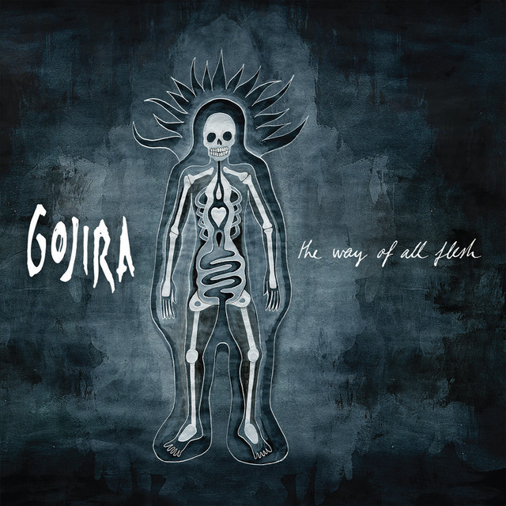
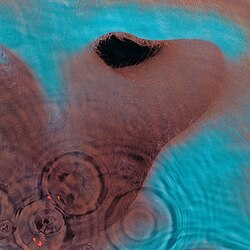

Comecei a tocar música com 11 anos, quando fazia aulas de piano particular. No ano seguinte, fui para uma escola de música que ficava nos fundos de uma igreja. Mas depois de um tempo eu não estava me dedicando tanto quanto deveria, então decidi parar de ir. No entanto, quando eu entre no IF, meu interesse por música se despertou novamente, e comecei a praticar novamente. Agora irei tentar me matricular no conservatório de Uberlândia para continuar os estudos de música.
Sou bastante eclético, mas meus gêneros preferidos são rock e metal, com minhas bandas preferidas sendo Pink Floyd e Gojira.

